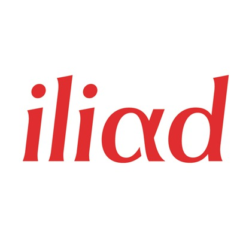

Années 1990
Naissance d'Iliad
Xavier Niel rachète la société Fermic Multimedia en 1991, spécialisée dans les services Minitel, et la renomme Iliad en 1994. Cette acquisition marque le début d'une stratégie de diversification dans les télécommunications. Iliad se positionne rapidement comme un acteur innovant du secteur numérique français, posant les bases de ce qui deviendra Free.
